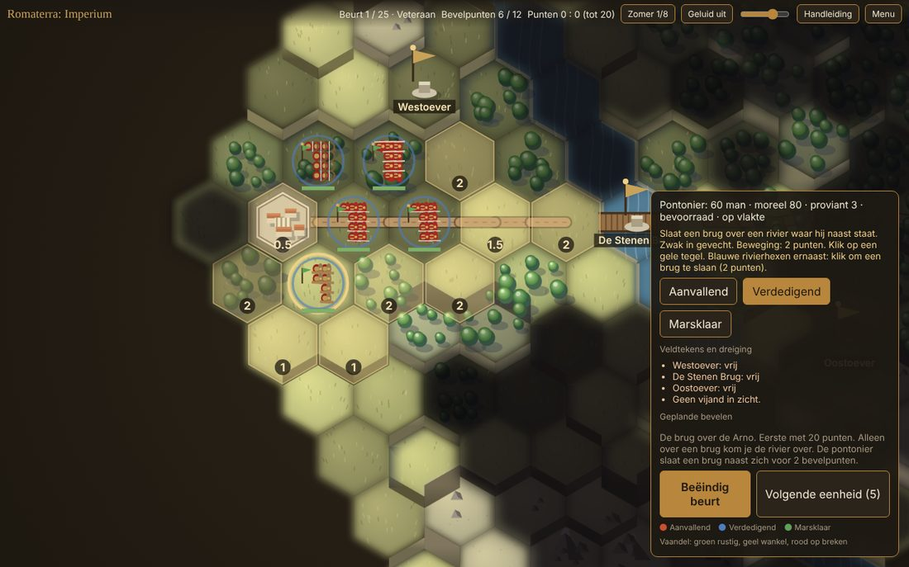
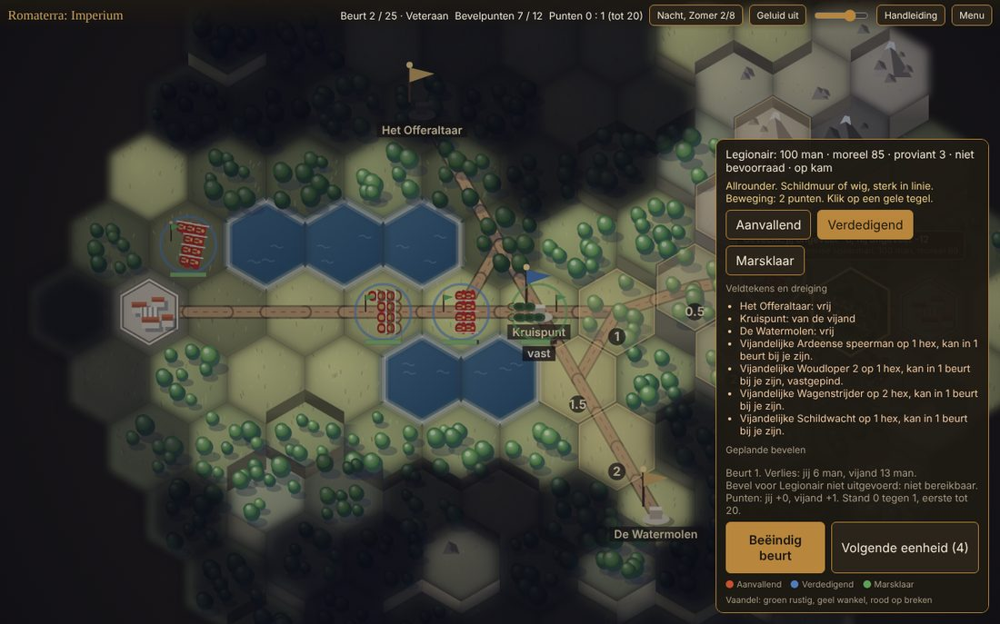
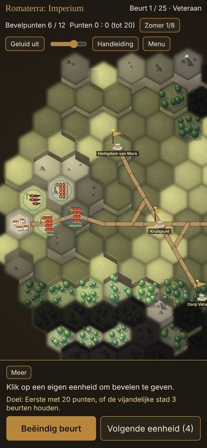

Wat voor spel is dit
Je voert een klein Romeins leger aan: cohorten, schutters, ruiters, later ook hastati, pontoniers en een ballista. Elke beurt geef je bevelen met een beperkt aantal bevelpunten, en daarna speelt de wereld zich af: de vijand marcheert, de pijlen vliegen, de linies botsen, en het moreel bepaalt wie standhoudt.
In het midden van het veld liggen drie veldtekens. Wie er staat, verdient punten. Een vernietigde vijand levert er drie. De eerste met twintig wint, of wie de stad van de ander drie beurten houdt.
- Hoogte geeft zicht en kracht; wie boven staat, slaat harder.
- Buiten de wegen raakt een leger zonder proviant. Veldtekens voeden wie erop staat.
- Formaties: wig, schildmuur of colonne. Elke keuze kost wat.
- Moreel breekt eerder dan manschappen. Een gebroken cohort luistert niet meer.
- Seizoenen van acht beurten: zomer, herfst, winter, lente. Nachtgevechten met drie hexen zicht.
- Je ziet vóór je zet wat een gevecht gaat kosten.
De veldtocht
1. De vlakte van Vetulonia
Een oefenslag tegen het Tweede Legioen. Leer je cohorten kennen.
2. De Ardeense heuvels
Speren op de heuvel, woudlopers in het bos. Pak de hoogte voordat zij het doen.
3. Nachtmars
Je ziet drie hexen ver. Zij zien jou. Houd je linie gesloten.
4. De brug over de Arno
Eén brug, bezet. Laat je pontoniers een tweede slaan.
5. Winter in de Thule-pas
Sneeuw, honger en een ballista. Blijf bij de wegen.
6. Het beleg van Ardenum
De hoofdstad van de Ardeni. Neem de stad, of breek hun leger ervoor.
Sterren per scenario, nieuwe eenheden die je vrijspeelt, en daarna de vrije veldslag op een willekeurige kaart tegen een tegenstander naar keuze: Rekruut, Veteraan of Krijgsheer.
Ook op de telefoon
Geen installatie, geen account. Tik op een tegel voor uitleg, knijp om te zoomen, en je spel wordt na elke beurt in je browser bewaard. Een partij duurt een kwartier tot een half uur.


Online tegen een vriend
Naast de solo-versie komt een online versie: twee mensen, één bord, dezelfde regels. De een maakt een partij en geeft een code van vier letters door, de ander doet mee. Wie wegblijft, wordt tijdelijk door de computer vervangen, zodat de ander nooit vastzit. Zodra die versie open is, vind je hem hier.
Over Romaterra
Romaterra is de wereld van Terrastate in de tijd van Rome. Imperium speelt zich af op het slagveld zelf: geen rijk bouwen, maar één slag goed voeren. Gemaakt door Wim Kamphorst, in eigen beheer, zonder reclame en zonder aankopen in het spel.